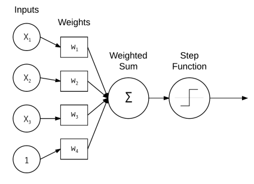
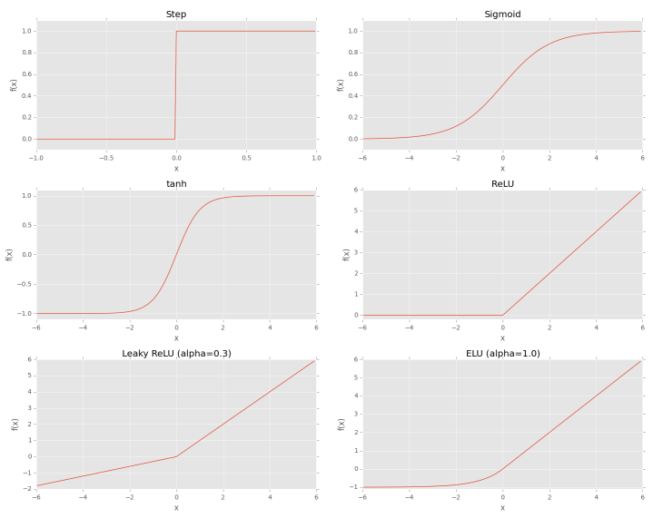

Neural Networks
Neural networks are the building blocks of deep learning systems. A system is called a neural network if it contains a labeled, directed graph structure where each node in the graph performs some computation.

Figure: A simple neural network that takes the weighted sum of inputs x and weights w which is then passed through the activation function to determine the output.
Activation Functions

Sigmoid Function is continuous and differentiable everywhere. It is symmetric around the y-axis. The outputs of the sigmoid are not zero centered. Saturated neurons essentially kill the gradient, since the delta of the gradient will be extremely small.
Rectified Linear Unit (ReLU) is zero for negative inputs but increases linearly for positive inputs. The ReLU function is not saturable and is also extremely computationally efficient. ReLU is the most popular activation function used in deep learning and has stronger biological motivations.
Feedforward Neural Networks
The neural networks architecture in which a connection between nodes is only allowed from nodes in layer i to nodes in layer i + 1, with no backward or inter-layer connections are called feedforward neural networks. When feedforward neural networks include feedback connections i.e. output connections that feed back into the inputs, are called recurrent neural networks.
Backpropagation
Backpropagation is a generalization of the gradient descent algorithms that is specifically used to train multi-layer feedforward networks. The backpropagation algorithm consists of two phases:
The forward pass where we pass our inputs through the network to obtain our output classifications.
The backward pass i.e. weight update phase where we compute the gradient of the loss function and use the information to iteratively apply the chain rule to update the weights in neural networks.
The activation functions inside the network are differentiable, allowing the chain rule to be applied. Any layers inside the network that require updates to their weights and parameters must be compatible with backpropagation.
One Hot Encoding is the process of transforming integer labels into vector labels, where the index in the vector for label is set to 1 and 0 otherwise.
Convolutions
Convolutions are one of the most critical, fundamental building-blocks in computer vision and image processing. Convolution is an element-wise multiplication of two matrices followed by a sum.
Convolutional Layers
It accepts an input volume of size Winput X Hinput X Dinput .The input sizes are normally square, so it’s common to see Winput = Hinput . The number of filters K controls the depth of the output volume. The output of the convolutional layer is Woutput X Houtput X Doutput , where:
Woutput = ((Winput - F + 2P)/S) + 1.
Houtput = ((Hinput - F + 2P)/S) + 1.
Doutput = K
Here, K is the number of filters, which when used for convolution yields receptive field F. S is the stride and P is the amount of zero-padding.